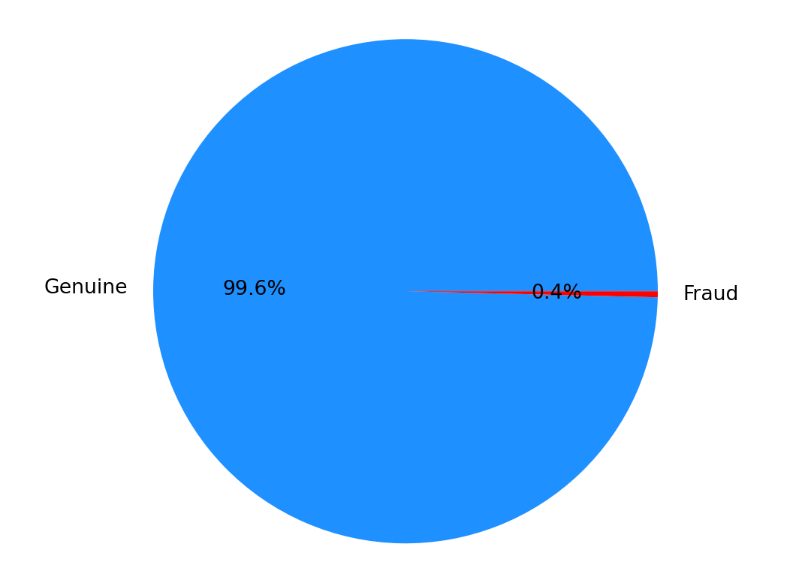
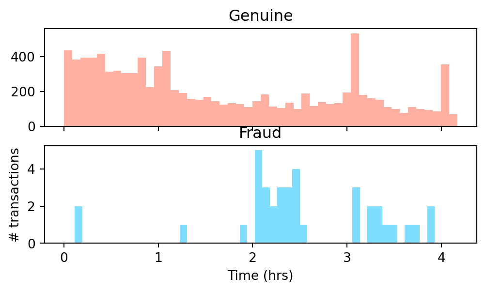
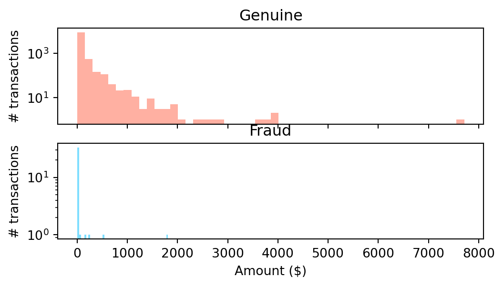

import numpy as np
import pandas as pd
import matplotlib.pyplot as plt
from sklearn.preprocessing import StandardScaler
from sklearn.metrics import confusion_matrix,auc,roc_auc_score
from sklearn.metrics import recall_score, precision_score, accuracy_score, f1_scoreImage source: https://www.freepik.com
Introduction
Probability Theory
Probability theory is a branch of mathematics that deals with the quantification of uncertainty and randomness. It provides a framework for reasoning about uncertainty and making predictions in the presence of incomplete information.
Probability is a measure of the likelihood that a particular event will occur. The set of all possible events is called Sample Space, denoted by S. All The probability of an event E, denoted by P(E), is a number between 0 and 1, where 0 indicates impossibility, 1 indicates certainty, and values in between represent degrees of likelihood. It satisfies three axioms:
Non-negativity: P(E) \ge 0 for any event E.
Normalization: P(S) = 1, indicating that at least one of the possible outcomes must occur.
Additivity: For any mutually exclusive events E_1, E_2, \cdots, the probability of their union is the sum of their individual probabilities: P(E_1 \cup E_2 \cup \cdots ) = P(E_1) + P(E_2) + \cdots.
Conditional Probability and Marginal Probability
Conditional probability is the probability of an event A occurring given that another event B has already occurred. It is denoted by P(A∣B) and is calculated using the formula:
P(A|B)=\frac{P(A \cap B)}{P(B)}
where P(A \cap B) is the probability of both A and B occurring together, and P(B) is the probability of B occurring.
Marginal probability refers to the probability of a specific event irrespective of the occurrence or non-occurrence of other events. It is obtained by summing or integrating probabilities over all possible values of the other events. For a single event A, the marginal probability is denoted by P(A). If A_1, A_2, \cdots, A_n are mutually exclusive events whose union is the entire sample space S, then for any event B, the law of total probability states:
P(B)=P(B \cap A_1) + P(B \cap A_2) + \cdots + P(B \cap A_n)
Conditional probability represents the likelihood of event A occurring under the condition that event B has occurred. Marginal probability provides the overall likelihood of a particular event without considering the influence of other events. Understanding conditional and marginal probabilities is crucial for analyzing and modeling random phenomena.
Conditional probability allows us to update probabilities based on additional information, while marginal probability provides the overall likelihood of specific events in the absence of additional conditions. The multiplication rule and Bayes’ theorem highlight the relationships between these two concepts in probabilistic reasoning.
Applications
Probability plays a crucial role in various aspects of machine learning. In machine learning, probability is not only a tool for modeling uncertainty but also a foundation for making informed decisions based on available data. It enables practitioners to quantify uncertainty, incorporate prior knowledge, and build models that can make predictions with associated confidence levels.
Bayesian methods, in particular, highlight the importance of updating beliefs as new data becomes available, contributing to a more flexible and adaptive learning process.
Methodology
Bayes’ Theorem
Naive Bayes is based on Bayes’ theorem, which is a fundamental concept in probability theory. Bayes’ theorem relates the conditional and marginal probabilities of random events. In the context of Naive Bayes, it helps in estimating the probability of a particular class given a set of features.
The formula for Bayes’ theorem is as follows:
P(A|B)=\frac{P(B|A)\cdot P(A)}{P(B)}
where P(A|B) is the probability of a class given the observed features, P(B|A) is the likelihood of observing the features given the class, P(A) is the prior probability of the class, P(B) is the probability of observing the features.
Naive Bayes Algorithm
In the Naive Bayes algorithm, the goal is often to find the class label C that maximizes the posterior probability P(C∣X), where X is a set of observed features. Due to the independence assumption (naive assumption), this can be simplified as follows:
\\ P(C∣X) \propto P(C) \cdot \prod_{i=1}^{n} P(x_i|C)
where P(C) is the prior probability of class C, P(x_i|C) is the likelihood of observing feature x_i given class C, \prod_{i=1}^{n} P(x_i|C) represents the product of the likelihoods for all features.
The proportionality sign indicates that we are interested in the class that maximizes this expression. Finally, the class with the highest posterior probability is chosen as the predicted class.
In summary, Naive Bayes uses probability theory, specifically Bayes’ theorem, to estimate the likelihood of a particular class given observed features. The naive assumption of feature independence simplifies the computation, making it a powerful and computationally efficient algorithm for certain types of classification tasks, such as text classification.
Datasets
Description
In this bolg, we consider the task of fraud detection thought the method of Naive Bayes.
The dataset comprises credit card transactions conducted by European cardholders in September 2013. Within this dataset, there were 492 instances of fraud among a total of 284,807 transactions spanning a two-day period.
The dataset exhibits significant imbalance, with frauds representing a mere 0.172% of the entire transaction volume, categorizing the positive class as relatively rare. It only contains numerical input variables resulting from a Principal Component Analysis (PCA) transformation. Due to the constraints of confidentiality, we are unable to furnish the original features and additional contextual information about the dataset.
Notably, features V1 through V28 represent the principal components derived from PCA. The only exceptions are ‘Time’ and ‘Amount,’ which have not undergone PCA transformation. ‘Time’ signifies the elapsed seconds between each transaction and the initial transaction in the dataset, while ‘Amount’ denotes the transaction amount. The latter feature is particularly useful for example-dependent cost-sensitive learning. Lastly, the target variable, ‘Class’ will be 1 if it is fraud and 0 otherwise.
In order to speed up the compilation of the blog, we only includes 10,000 records of the dataset in the following analysis.
Data Preprocessing and Visualization
df = pd.read_csv("data/creditcard_10k.csv")
df.head()| Time | V1 | V2 | V3 | V4 | V5 | V6 | V7 | V8 | V9 | ... | V21 | V22 | V23 | V24 | V25 | V26 | V27 | V28 | Amount | Class | |
|---|---|---|---|---|---|---|---|---|---|---|---|---|---|---|---|---|---|---|---|---|---|
| 0 | 0 | -1.359807 | -0.072781 | 2.536347 | 1.378155 | -0.338321 | 0.462388 | 0.239599 | 0.098698 | 0.363787 | ... | -0.018307 | 0.277838 | -0.110474 | 0.066928 | 0.128539 | -0.189115 | 0.133558 | -0.021053 | 149.62 | 0 |
| 1 | 0 | 1.191857 | 0.266151 | 0.166480 | 0.448154 | 0.060018 | -0.082361 | -0.078803 | 0.085102 | -0.255425 | ... | -0.225775 | -0.638672 | 0.101288 | -0.339846 | 0.167170 | 0.125895 | -0.008983 | 0.014724 | 2.69 | 0 |
| 2 | 1 | -1.358354 | -1.340163 | 1.773209 | 0.379780 | -0.503198 | 1.800499 | 0.791461 | 0.247676 | -1.514654 | ... | 0.247998 | 0.771679 | 0.909412 | -0.689281 | -0.327642 | -0.139097 | -0.055353 | -0.059752 | 378.66 | 0 |
| 3 | 1 | -0.966272 | -0.185226 | 1.792993 | -0.863291 | -0.010309 | 1.247203 | 0.237609 | 0.377436 | -1.387024 | ... | -0.108300 | 0.005274 | -0.190321 | -1.175575 | 0.647376 | -0.221929 | 0.062723 | 0.061458 | 123.50 | 0 |
| 4 | 2 | -1.158233 | 0.877737 | 1.548718 | 0.403034 | -0.407193 | 0.095921 | 0.592941 | -0.270533 | 0.817739 | ... | -0.009431 | 0.798278 | -0.137458 | 0.141267 | -0.206010 | 0.502292 | 0.219422 | 0.215153 | 69.99 | 0 |
5 rows × 31 columns
df.describe()| Time | V1 | V2 | V3 | V4 | V5 | V6 | V7 | V8 | V9 | ... | V21 | V22 | V23 | V24 | V25 | V26 | V27 | V28 | Amount | Class | |
|---|---|---|---|---|---|---|---|---|---|---|---|---|---|---|---|---|---|---|---|---|---|
| count | 9999.000000 | 9999.000000 | 9999.000000 | 9999.000000 | 9999.000000 | 9999.000000 | 9999.000000 | 9999.000000 | 9999.000000 | 9999.000000 | ... | 9999.000000 | 9999.000000 | 9999.000000 | 9999.000000 | 9999.000000 | 9999.000000 | 9999.000000 | 9999.000000 | 9999.000000 | 9999.000000 |
| mean | 5965.128713 | -0.241768 | 0.281829 | 0.906164 | 0.263916 | -0.046353 | 0.133134 | -0.071791 | -0.064802 | 0.802379 | ... | -0.051994 | -0.152667 | -0.033292 | 0.021271 | 0.087125 | 0.108154 | 0.005533 | 0.002912 | 63.020562 | 0.003800 |
| std | 4472.712504 | 1.521726 | 1.308149 | 1.159164 | 1.441120 | 1.182986 | 1.307373 | 1.077437 | 1.259125 | 1.155150 | ... | 0.913856 | 0.631114 | 0.487832 | 0.594425 | 0.428188 | 0.562819 | 0.410886 | 0.266261 | 184.492872 | 0.061533 |
| min | 0.000000 | -27.670569 | -34.607649 | -15.496222 | -4.657545 | -32.092129 | -23.496714 | -26.548144 | -23.632502 | -6.329801 | ... | -11.468435 | -8.527145 | -15.144340 | -2.512377 | -2.577363 | -1.338556 | -7.976100 | -3.509250 | 0.000000 | 0.000000 |
| 25% | 2072.500000 | -1.013135 | -0.208350 | 0.412752 | -0.614489 | -0.643510 | -0.629975 | -0.542363 | -0.190784 | 0.071116 | ... | -0.268135 | -0.549665 | -0.174123 | -0.327857 | -0.158137 | -0.328038 | -0.084479 | -0.015753 | 5.000000 | 0.000000 |
| 50% | 4563.000000 | -0.372624 | 0.288381 | 0.944342 | 0.219852 | -0.152524 | -0.152621 | -0.055776 | 0.012791 | 0.805293 | ... | -0.123286 | -0.136735 | -0.045811 | 0.079956 | 0.120865 | 0.042879 | -0.004566 | 0.015893 | 15.950000 | 0.000000 |
| 75% | 10231.500000 | 1.150869 | 0.901632 | 1.602707 | 1.125501 | 0.371301 | 0.505448 | 0.476175 | 0.274582 | 1.506342 | ... | 0.032715 | 0.247521 | 0.081546 | 0.410798 | 0.359081 | 0.476792 | 0.120836 | 0.077184 | 50.890000 | 0.000000 |
| max | 15010.000000 | 1.960497 | 8.636214 | 4.101716 | 10.463020 | 34.099309 | 21.393069 | 34.303177 | 5.060381 | 10.392889 | ... | 22.588989 | 4.534454 | 13.876221 | 3.200201 | 5.525093 | 3.517346 | 8.254376 | 4.860769 | 7712.430000 | 1.000000 |
8 rows × 31 columns
df.info()<class 'pandas.core.frame.DataFrame'>
RangeIndex: 9999 entries, 0 to 9998
Data columns (total 31 columns):
# Column Non-Null Count Dtype
--- ------ -------------- -----
0 Time 9999 non-null int64
1 V1 9999 non-null float64
2 V2 9999 non-null float64
3 V3 9999 non-null float64
4 V4 9999 non-null float64
5 V5 9999 non-null float64
6 V6 9999 non-null float64
7 V7 9999 non-null float64
8 V8 9999 non-null float64
9 V9 9999 non-null float64
10 V10 9999 non-null float64
11 V11 9999 non-null float64
12 V12 9999 non-null float64
13 V13 9999 non-null float64
14 V14 9999 non-null float64
15 V15 9999 non-null float64
16 V16 9999 non-null float64
17 V17 9999 non-null float64
18 V18 9999 non-null float64
19 V19 9999 non-null float64
20 V20 9999 non-null float64
21 V21 9999 non-null float64
22 V22 9999 non-null float64
23 V23 9999 non-null float64
24 V24 9999 non-null float64
25 V25 9999 non-null float64
26 V26 9999 non-null float64
27 V27 9999 non-null float64
28 V28 9999 non-null float64
29 Amount 9999 non-null float64
30 Class 9999 non-null int64
dtypes: float64(29), int64(2)
memory usage: 2.4 MBfig, ax = plt.subplots(1, 1)
ax.pie(df.Class.value_counts(),autopct='%1.1f%%', labels=['Genuine','Fraud'], colors=['dodgerblue','r'])
plt.axis('equal')
plt.ylabel('')
plt.show()
df["Time_Hr"] = df["Time"]/3600
fig, (ax1, ax2) = plt.subplots(2, 1, sharex = True, figsize=(6,3))
ax1.hist(df.Time_Hr[df.Class==0],bins=48,color='tomato',alpha=0.5)
ax1.set_title('Genuine')
ax2.hist(df.Time_Hr[df.Class==1],bins=48,color='deepskyblue',alpha=0.5)
ax2.set_title('Fraud')
plt.xlabel('Time (hrs)')
plt.ylabel('# transactions')
plt.show()
fig, (ax3,ax4) = plt.subplots(2,1, figsize = (6,3), sharex = True)
ax3.hist(df.Amount[df.Class==0],bins=50,color='tomato',alpha=0.5)
ax3.set_yscale('log') # to see the tails
ax3.set_title('Genuine') # to see the tails
ax3.set_ylabel('# transactions')
ax4.hist(df.Amount[df.Class==1],bins=50,color='deepskyblue',alpha=0.5)
ax4.set_yscale('log') # to see the tails
ax4.set_title('Fraud') # to see the tails
ax4.set_xlabel('Amount ($)')
ax4.set_ylabel('# transactions')
plt.show()
df['scaled_Amount'] = StandardScaler().fit_transform(df['Amount'].values.reshape(-1,1))
df = df.drop(['Amount'],axis=1)Experiments
from sklearn.naive_bayes import GaussianNBdef split_data(df, drop_list):
df = df.drop(drop_list,axis=1)
print(df.columns)
#test train split time
from sklearn.model_selection import train_test_split
y = df['Class'].values #target
X = df.drop(['Class'],axis=1).values #features
X_train, X_test, y_train, y_test = train_test_split(X, y, test_size=0.2,
random_state=42, stratify=y)
print("train-set size: ", len(y_train),
"\ntest-set size: ", len(y_test))
print("fraud cases in test-set: ", sum(y_test))
return X_train, X_test, y_train, y_testdef get_predictions(clf, X_train, y_train, X_test):
# create classifier
clf = clf
# fit it to training data
clf.fit(X_train,y_train)
# predict using test data
y_pred = clf.predict(X_test)
# Compute predicted probabilities: y_pred_prob
y_pred_prob = clf.predict_proba(X_test)
#for fun: train-set predictions
train_pred = clf.predict(X_train)
print('train-set confusion matrix:\n', confusion_matrix(y_train,train_pred))
return y_pred, y_pred_probdef print_scores(y_test,y_pred,y_pred_prob):
print('test-set confusion matrix:\n', confusion_matrix(y_test,y_pred))
print("recall score: ", recall_score(y_test,y_pred))
print("precision score: ", precision_score(y_test,y_pred))
print("f1 score: ", f1_score(y_test,y_pred))
print("accuracy score: ", accuracy_score(y_test,y_pred))
print("ROC AUC: {}".format(roc_auc_score(y_test, y_pred_prob[:,1])))drop_list = []
X_train, X_test, y_train, y_test = split_data(df, drop_list)
y_pred, y_pred_prob = get_predictions(GaussianNB(), X_train, y_train, X_test)
print_scores(y_test,y_pred,y_pred_prob)Index(['Time', 'V1', 'V2', 'V3', 'V4', 'V5', 'V6', 'V7', 'V8', 'V9', 'V10',
'V11', 'V12', 'V13', 'V14', 'V15', 'V16', 'V17', 'V18', 'V19', 'V20',
'V21', 'V22', 'V23', 'V24', 'V25', 'V26', 'V27', 'V28', 'Class',
'Time_Hr', 'scaled_Amount'],
dtype='object')
train-set size: 7999
test-set size: 2000
fraud cases in test-set: 8
train-set confusion matrix:
[[7914 55]
[ 1 29]]
test-set confusion matrix:
[[1967 25]
[ 1 7]]
recall score: 0.875
precision score: 0.21875
f1 score: 0.35
accuracy score: 0.987
ROC AUC: 0.9919992469879518Discussion and Conclusions
Discussion
The Naive Bayes algorithm has proven to be a powerful and efficient tool in various machine learning applications, particularly in classification tasks. Its simplicity, speed, and effectiveness make it well-suited for scenarios where computational resources are limited or where a quick and interpretable solution is desired.
One key strength of Naive Bayes lies in its probabilistic foundation. The algorithm leverages Bayes’ theorem to estimate the probability of a particular class given observed features. The assumption of feature independence, though naive, often proves to be a reasonable approximation in practice. This assumption significantly simplifies the computational complexity of the algorithm, allowing it to scale well to high-dimensional datasets.
Limitations
It’s crucial to acknowledge the limitations of the Naive Bayes algorithm. The assumption of feature independence may not always hold in real-world datasets,(e.g., in the above example of fraud detection) and in such cases, more sophisticated models might be warranted. Furthermore, Naive Bayes is sensitive to the quality of input features, and the presence of irrelevant or redundant features can impact its performance. In cases where the assumption of independence is a significant concern, more advanced techniques such as ensemble methods or probabilistic graphical models might be explored. These approaches can capture more complex relationships between features and enhance the algorithm’s predictive capabilities.
Conclusions
While Naive Bayes may not be the optimal choice for every machine learning task, its simplicity and efficiency make it a valuable option in specific contexts. As with any algorithm, careful consideration of the underlying assumptions and characteristics of the dataset is essential. Naive Bayes serves as a foundational tool in the machine learning toolbox, providing a baseline for comparison and a quick solution for certain types of classification problems.